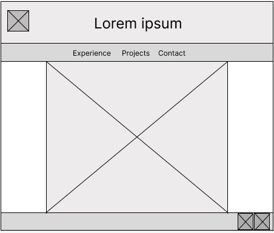
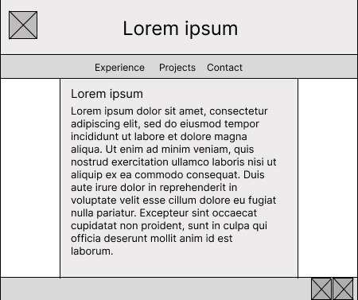
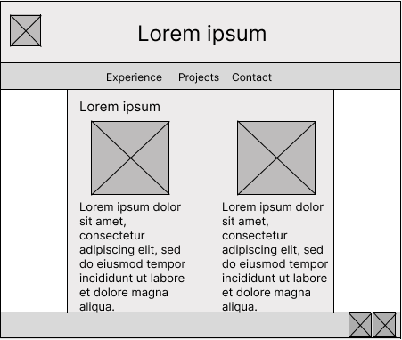

Site Name
Site Name: sam-portfolio
This name is simple, professional, and directly represents the purpose of the site. It will work well as part of a GitHub Pages URL and clearly communicates that the site is a personal portfolio.
Purpose
The purpose of this site is to present a professional portfolio for Sam Bradshaw that highlights technical skills, work experience, and programming projects in one organized location. The site will help employers, recruiters, and collaborators quickly learn about Sam’s background and evaluate his qualifications through clear content, visual design, and interactive features.
Audience
The primary audience for this site is employers, recruiters, internship coordinators, and professional contacts who want to review Sam’s skills and past work. A secondary audience includes classmates, instructors, and networking contacts who may want to explore projects, experience, and contact information in an easy-to-use format.
Description of Dynamic Elements
JavaScript will be used to make the site interactive and meet WDD 131 requirements. A projects page will load project information from an array of objects and display it dynamically in the DOM. Users will be able to filter projects by category such as web, Python, data, or school projects. A search feature will let visitors type keywords and instantly narrow the visible projects. Buttons and form controls will listen for user events and update the displayed content.
The site will also include conditional logic, such as showing a “no results found” message when a filter or search returns no matches. Array methods such as forEach, filter, and map will be used to organize and render data. Multiple JavaScript functions will separate tasks like rendering cards, filtering data, and handling events so the code stays organized and readable.
Logo
The logo gives the site a professional identity and will appear in the header across the site.
Style Guide
Color Palette
| Primary | Secondary | Accent | Background |
|---|---|---|---|
| #206791 | #184d6d | #333333 | #fcfcfc |
Typography
Heading Font: Georgia, "Times New Roman", serif
Paragraph Font: Arial, Helvetica, sans-serif
Why These Choices
The blue color palette creates a clean and trustworthy professional look. The serif heading font gives the site a polished feel, while the sans-serif paragraph font improves readability on screens, especially for mobile users.
Navigation
The site will use simple top navigation so users can quickly move between the main sections.
Content Plan
Home Page
The home page will introduce Sam Bradshaw with a professional headline, short biography, and featured skills. It will include a profile image or graphic, a short welcome message, and quick links to important sections of the site.
Experience Page
This page will present work experience, job titles, responsibilities, and major accomplishments. It will help visitors understand Sam’s professional background and real-world business experience.
Projects Page
This page will showcase school and personal programming projects. Each project card will include a title, category, short description, technologies used, and possibly a GitHub link. This page will contain the main JavaScript interactivity with filtering and searching.
Contact Page
This page will include email, GitHub, LinkedIn, and other professional contact methods. It may also include a styled contact form layout for practice, even if the final form does not submit data.
Planned Images and Assets
- Logo image
- Profile or portfolio-related image for the home page
- Technology or project-related icons/images
- Social media icons for GitHub and LinkedIn
Wireframes
Mobile View
Mobile layout will stack content vertically with navigation, introduction, featured content, and footer arranged in a single-column format.

Desktop View
Desktop layout will use wider spacing, multiple columns where appropriate, and more prominent project cards and section groupings.

